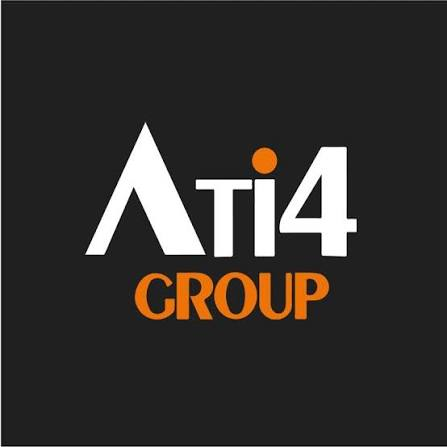
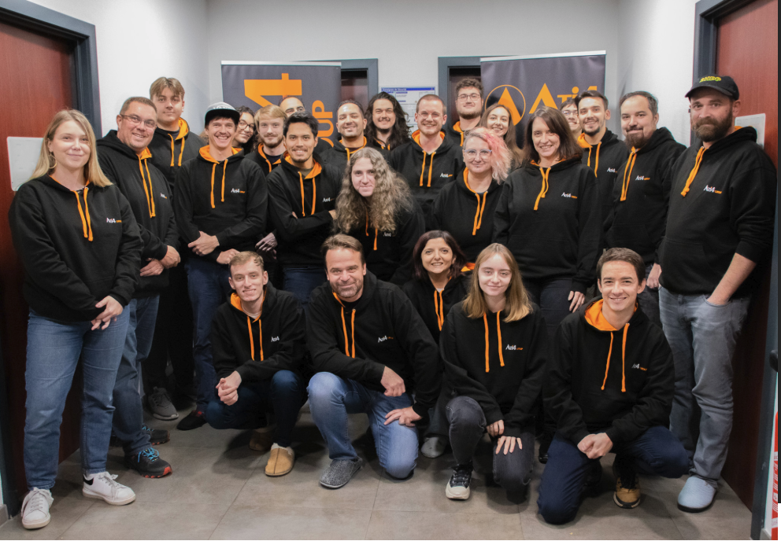

02 — L'ENTREPRISE

Comprendre votre métier, vos technologies et les projets qui m'ont donné envie d'en savoir plus.
VOTRE EXPERTISE
ATI4Group, basée à Strasbourg, accompagne ses clients
dans la création et l'évolution de leurs projets digitaux.
Du design UX/UI au développement web, en passant par le référencement et la maintenance, votre travail couvre
plusieurs étapes de la vie d'une boutique en ligne. Vous utilisez notamment des technologies comme Adobe Commerce, Magento et Hyvä.
ATI4Group propose également des formations, notamment autour de l’intelligence artificielle. J’ai trouvé intéressant de voir que vous encouragez la formation et l’évolution des compétences dans un secteur qui évolue rapidement.
Votre organisation repose sur le travail en équipe et le partage des compétences, avec des collaborateurs qui interviennent sur plusieurs projets clients. Cette diversité m’intéresse, car elle permet de découvrir des projets variés et de mieux comprendre les différentes étapes du développement web.
VOTRE UNIVERS
Votre signature « Ecommerce made 4 you » reflète votre volonté de proposer des solutions adaptées à chaque client. J'ai également retenu vos valeurs de passion, de partage et d'expertise, ainsi que l'importance de l'apprentissage et du travail en équipe.
UN INTERET PARTICULIER POUR VOS PROJETS
J'ai suivi avec intérêt votre travail autour d'Amer Sports. J'apprécie particulièrement la marque Wilson, que j'ai d'ailleurs choisie comme sujet pour réaliser une maquette sur Figma dans le cadre d'un exercice en cours. Ce travail était personnel et pédagogique, mais il m'a permis de m'intéresser davantage à la conception d'interfaces pour une marque existante. Au-delà de cet intérêt, ce sont surtout la diversité de vos clients, les technologies utilisées et les projets que vous réalisez qui m'intéressent. Découvrir les coulisses de ces réalisations et comprendre comment elles sont conçues, développées et maintenues représente pour moi une perspective particulièrement intéressante dans le cadre de mon alternance.